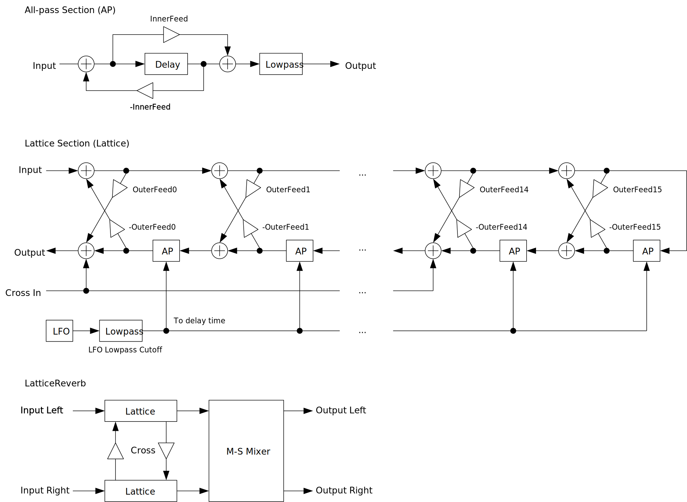
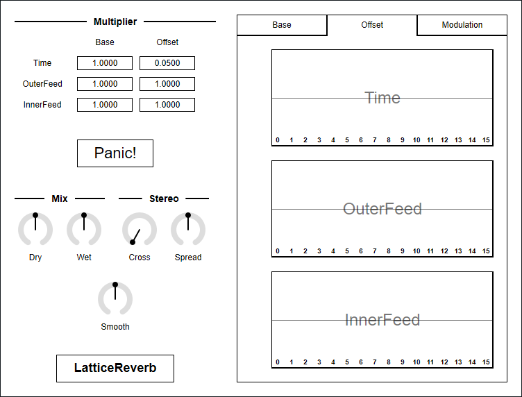

Update: 2020-05-15
LatticeReverb is a reverb using lattice structure. Equipped with 16 delays per channel.
LatticeReverb requires CPU which supports AVX or later SIMD instructions.
The package includes following builds:
macOS build isn’t tested because I don’t have Mac. If you found a bug, please file a issue to GitHub repository or send email to ryukau@gmail.com.
Linux build is built on Ubuntu 18.0.4 and tested on Bitwig 3.1.2 and Reaper 6.03. Bitwig 3.1.2 seems to have a bug that occasionally blackouts GUI.
Place *.vst3 directory to:
/Program Files/Common Files/VST3/ for Windows.$HOME/.vst3/ for Linux./Users/$USERNAME/Library/Audio/Plug-ins/VST3/ for macOS.DAW may provides additional VST3 directory. For more information, please refer to the manual of the DAW.
Extract preset zip, then place preset directory to the OS specific path:
/Users/$USERNAME/Documents/VST3 Presets/Uhhyou$HOME/.vst3/presets/Uhhyou/Users/$USERNAME/Library/Audio/Presets/UhhyouPreset directory name must be the same as the plugin. Make Uhhyou directory if it does not exist.
If DAW doesn’t recognize the plugin, try installing C++ redistributable (vc_redist.x64.exe). Installer can be found in the link below.
On Ubuntu 18.0.4, those packages are required.
If DAW doesn’t recognize the plugin, take a look at Package Requirements section of the link below and make sure all the VST3 related package is installed.
REAPER on Linux may not recognize the plugin. A workaround is to delete a file ~/.config/REAPER/reaper-vstplugins64.ini and restart REAPER.
Knob and slider can do:
There is an additional control for number sliders used for Octave, Seed etc.
Control with many blue vertical bars (BarBox) have some keyboard shortcuts. LFO Wave on Main tab and Gain, Width, Pitch, Phase on Wavetable tab are using BarBox. Shortcuts are enabled after left clicking BarBox and mouse cursor is on the inside of BarBox. Cheat sheet is available on Infomation tab.
| Input | Control |
|---|---|
| Ctrl + Left Click | Reset to Default |
| Right Drag | Draw Line |
| d | Reset Everything to Default |
| D | Toggle Min/Mid/Max |
| e | Emphasize Low |
| E | Emphasize High |
| f | Low-pass Filter |
| F | High-pass Filter |
| i | Invert Value (Preserve current minimum) |
| I | Invert Value (Minimum to 0) |
| n | Normalize (Preserve current minimum) |
| N | Normalize (Minimum to 0) |
| p | Permute |
| r | Randomize |
| R | Sparse Randomize |
| s | Sort Descending Order |
| S | Sort Ascending Order |
| t | Subtle Randomize |
| , (Comma) | Rotate Back |
| . (Period) | Rotate Forward |
| 1 | Decrease |
| 2-9 | Decrease 2n-9n |
Right Click on the controls pops up a context menu provided by DAW.
Output may change with different sample rate.
Output may become loud when following steps are performed.
OuterFeed or InnerFeed to close to minimum or maximum.OuterFeed or InnerFeed which was set at step 1.If the image is small, use Ctrl + Mouse Wheel or “View Image” on right click menu to scale.
Diagram only shows overview. It’s not exact implementation.

Base is value used in both left and right channel. Base value determines the character of reverb.
Offset is ratio of value between left and right channel. Changing Offset spreads reverb to stereo.
if (Offset >= 0) {
valueL = Base
valueR = Base * (1 - Offset)
}
else {
valueL = Base * (1 + Offset)
valueR = Base
}Delay time of all-pass filter.
Feedback and feedforward gain of lattice structure.
Feedback and feedforward gain of an all-pass filter.
Multiplier for Time, OuterFeed, InnerFeed. Useful to shorten or lengthen reverb without changing much of the character.
Pressing Panic! button stops reverb output by setting multiplier of Time, OuterFeed, InnerFeed to 0.
Useful to stop sounds in case of blow up.
Gain of input signal.
Gain of reverb signal.
Mixing ratio of stereo signal for odd stage in lattice structure.
If the value is 0, signal from other channel will not be mixed. If the value is 0.5, mixing ratio of current channel and other channel becomes 1:1.
Mid-side (M-S) signal ratio.
Following equations are used to calculate mid-side signal.
``` mid = left + right side = left - right
left = mid - Spread * (mid - side) right = mid - Spread * (mid + side) ```
Transition time to change parameter value to current one. Unit is in second.
Base tab provides controls for common values used in both channels.
Character of reverb is mostly determined by Base values.

Offset tab provides controls for ratio of value between left and right channel.
Changing values in Offset tab spreads reverb to stereo.

LFO modulation amount to Time.
LFO waveform is noise (uniform pseudo random number). Smoothness of LFO is changed by Time LFO Cutoff and Smooth.
Low-pass filter cutoff frequency for LFO.
Cutoff frequency of low-pass filters placed for each stage of lattice structure.
Useful to change the brightness of reverb.
N/A
LatticeReverb is licensed under GPLv3. Complete licenses are linked below.
If the link above doesn’t work, please send email to ryukau@gmail.com.
VST is a trademark of Steinberg Media Technologies GmbH, registered in Europe and other countries.